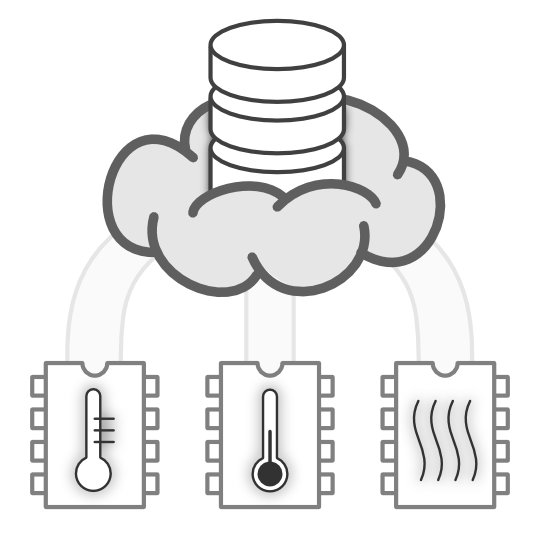
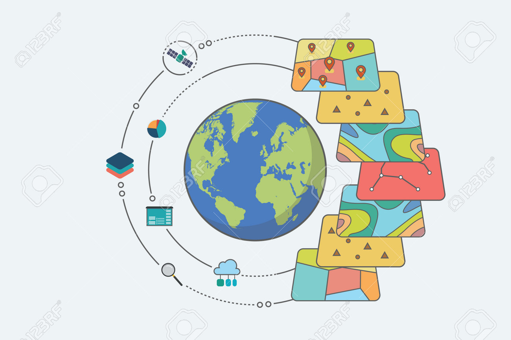

Las ciudades inteligentes dependen de una infraestructura de bases de datos robusta para gestionar la complejidad de los datos generados por dispositivos IoT, sensores y redes urbanas. Desde la gestión del tráfico hasta el monitoreo de la calidad del aire, las bases de datos recopilan, procesan y distribuyen datos para mejorar la calidad de vida de los ciudadanos.
Tendencias Actuales
Bases de Datos en IoT
- Dispositivos IoT en ciudades inteligentes generan datos en tiempo real. Por ejemplo, sensores en alumbrado público registran el uso energético para optimizar el consumo.
- Bases de datos distribuidas como Apache Cassandra son ideales para manejar este flujo constante de información.
Bases de Datos Espaciales y Geográficas
- PostgreSQL con PostGIS es fundamental para la planificación urbana, ya que permite integrar mapas, rutas de transporte y datos geoespaciales en una única base de datos.
- Ejemplo: Google Maps utiliza estas bases para calcular rutas optimizadas.
Análisis Predictivo Urbano
- Bases de datos avanzadas alimentan algoritmos de predicción que anticipan problemas como congestión vial o consumo excesivo de energía.
Proyecciones
Vehículos Autónomos
Las bases de datos en tiempo real permitirán a los vehículos autónomos acceder a mapas actualizados, datos meteorológicos y tráfico en vivo.
Ciudades Basadas en Blockchain
Blockchain proporcionará bases de datos descentralizadas y seguras para gestionar activos urbanos, como contratos inteligentes para servicios públicos.
Energía Inteligente
Bases de datos especializadas integrarán datos de fuentes renovables para equilibrar el consumo energético en ciudades enteras.